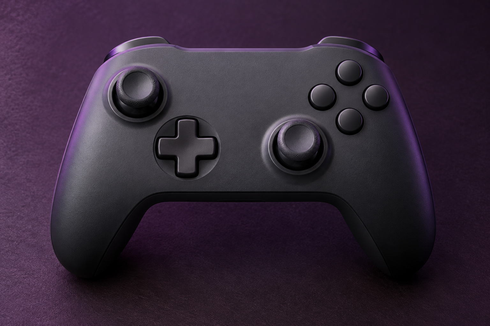
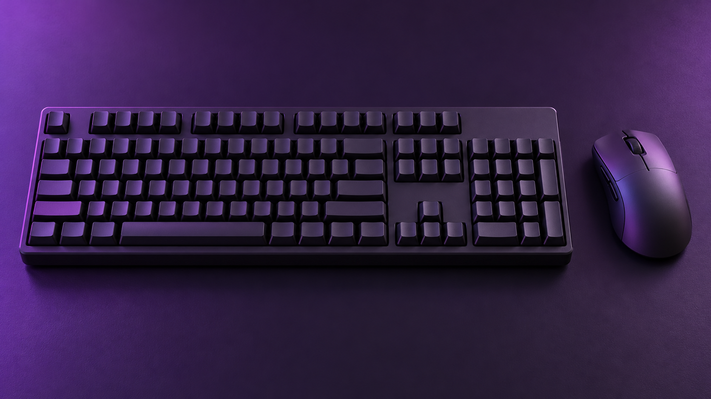
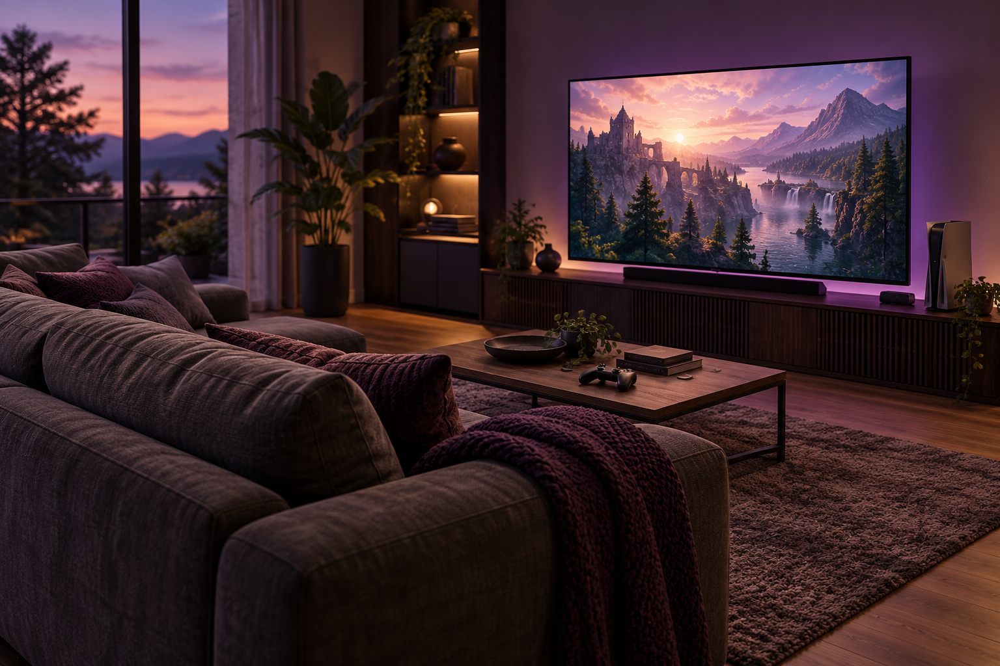
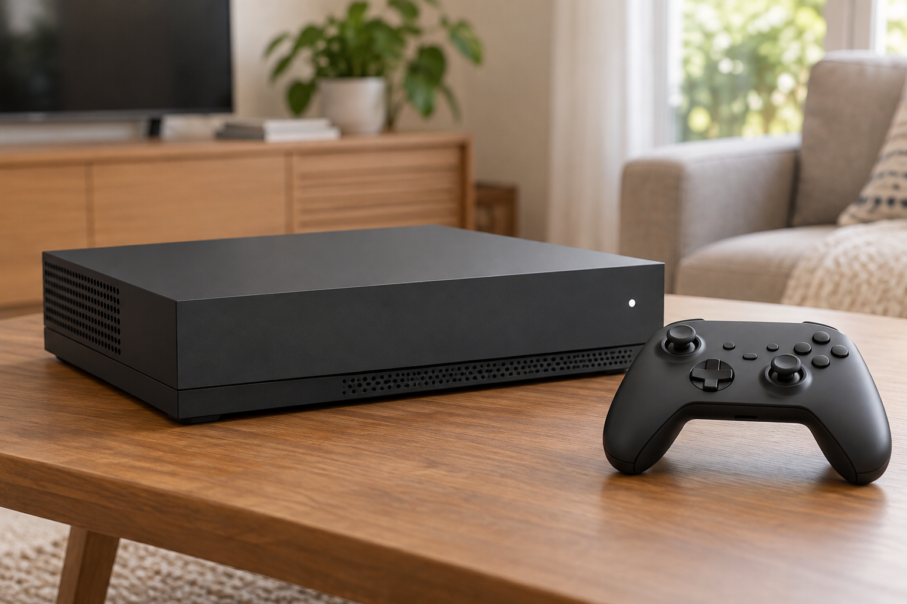

What Are Video Games?
Video games are interactive forms of media where people are able to immerse themselves into a world, solve challenges, interact with characters or even communicate with other people across the world. Unlike books or movies, games let their players take a more active role in the experience, whether that means decisions that shape a story, exploring unfamiliar places, or working cooperatively towards a shared goal.
There are many different styles of video games. Roleplaying games let people develop characters and explore fictional worlds, strategy games act as almost puzzles where players have to figure out how to overcome challenges or opponents with their decision making, and simulation games let players immerse themselves into either the fantastic or the mundane. There is no wrong way to play a video game, the purpose of this form of media is to let people enjoy a break from the day to day life and grind.

AI image prompt: Create a photorealistic product photograph of a generic charcoal video game controller on a dark plum surface with subtle purple lighting. Include two thumbsticks, a directional pad, and four unmarked buttons. No logos or text.
About Me
My name is Matthew Lovegren, I am a Computer Science major here at UNC Charlotte and Video Games are one of my hobbies that allows me to explore fictional worlds and escape everyday life for a short time. They are how I met a large majority of my friends, and how I met my partner.
My personal favorites are both Roleplaying games as well as strategy games. There are more, but those are how I grew up spending some of my free time. I particularly enjoy creating characters with unique stories and seeing how they interact with the world as a whole, very similar to Dungeons and Dragons.

AI image prompt: Create a photorealistic image of a simple charcoal keyboard and matching mouse on a tidy dark plum desk. Use subtle purple lighting, realistic materials, and soft shadows. No other objects, logos, or readable text.
When to Play
Video games are something that can be enjoyed at almost any time, whether you have a little free time between responsibilities or an entire evening to yourself. I find they are best enjoyed when schoolwork and other obligations are out of the way, so there is time to get immersed without worrying about what still needs to be done.
When to play also depends on what you are playing. Single-player games let people go at their own pace and stop whenever they need to, while multiplayer games can take a bit more coordination. Finding an evening where everyone is free can be a challenge, but it gives friends a chance to spend time together even when they live far apart.
AI image prompt: Create a photorealistic image of an analog tabletop clock on a dark plum windowsill, overlooking orange, gold, and red autumn trees. Use soft late-afternoon light, subtle purple interior accents, and a cozy, uncluttered composition. No logos or captions.
Where to Play
One of the easiest places to enjoy video games is at home, where people can make a space that works for them. For some, that means a computer at a desk, while others prefer sitting on a couch with a controller and television. There is no single setup everyone needs to have; it comes down to what feels comfortable and fits the space available.
Gaming does not have to stay at home either. Handheld consoles and phones let people bring their games with them while traveling or spending time away from their usual setup. Arcades or a friend's house can also be places to play, giving people a chance to enjoy games together in person rather than only talking through a screen.

AI image prompt: Create a photorealistic cozy living room with a couch facing a television and a generic game console. Use subtle purple lighting and a tidy, welcoming setting. No people, logos, or readable text.
How to Choose a Gaming Platform
Getting started with gaming means choosing a platform that fits your interests, budget, and available space. Some players prefer the flexibility of a computer, while others enjoy the convenience of a console or a portable device.
| Platform | Advantages | Tradeoffs |
|---|---|---|
| Desktop PC | Flexible hardware, upgrade options, and potentially powerful performance. Supports gaming, creative work, and other media. | Takes up space, and hardware choices and maintenance can require more effort. |
| Xbox / PlayStation | Designed around controller play, with a straightforward setup and access to games that may differ between platforms. | Limited hardware upgrades and less flexibility than a general-purpose computer. |
| Nintendo Switch | Offers handheld play and Nintendo games. Models with TV support can also be played on a larger screen. | Performance and game availability depend on the model. Not every model supports TV play. |
| Gaming Laptop | Combines computer gaming with portability and can also handle schoolwork and other media. | Limited upgrades, heat, and battery life can be tradeoffs. Performance varies by hardware. |
The best choice depends on what matters most to you: portability, convenience, customization, or particular games. There is a lot of flexibility when it comes to games.

AI image prompt: Create a photorealistic product photograph of a generic charcoal gaming console with a matching wireless controller on a wooden tabletop. Use natural daylight, realistic materials, and an uncluttered setting. No people, logos, or readable text.
Why I Enjoy Video Games
I enjoy video games because they let me step away from everyday life for a little while and get involved in something different. Sometimes that means exploring a fictional world through a character I created, and other times it means figuring out how to overcome a difficult opponent in a strategy game. Being able to make those decisions myself is a large part of what keeps me interested.
A large part of why I keep playing is the people I have met along the way. Many of my friendships, as well as my relationship with my partner, started through gaming. Creating stories together or working through a challenge gives us something to share, even when we are spending time in different places. For me, the people are just as much a part of the hobby as the games themselves.
AI image prompt: Create a photorealistic image of three adult friends enjoying a video game together on a couch, with two holding controllers. Use a cozy living room, natural daylight, and relaxed expressions. No logos or readable text.
AI Prompts
I used ChatGPT to help create the code and draft text for this website. It helped me organize the sections, fix formatting issues, choose matching colors, and add navigation that displays one section at a time. The images on this website were also generated using AI.
Examples of My Requests
- Helped me build a single file html website with seven switchable sections.
- Adjust the website colors and provide the complete stylesheet so the design stays consistent.
- Generate realistic images of gaming equipment, a living room, an autumn clock, and friends gaming.
The prompts were evolving, toying with colors and concepts about what I wanted to make the website about before settling on video games.
AI image prompt: Create a photorealistic product photograph of a generic charcoal video game controller on a dark plum surface with subtle purple lighting. Include two thumbsticks, a directional pad, and four unmarked buttons. No logos or text.